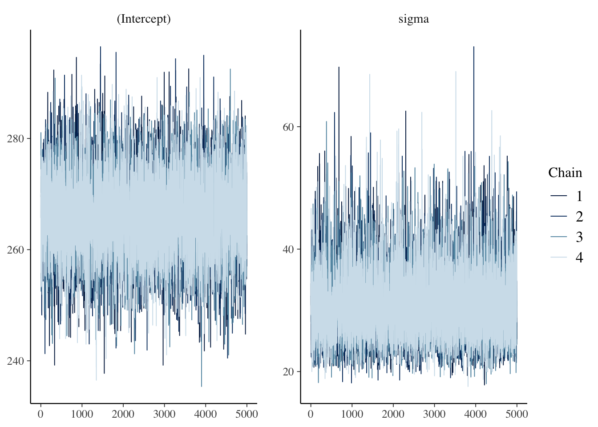
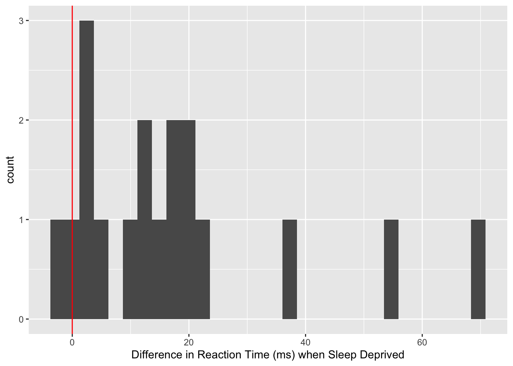

library(tidyverse)── Attaching core tidyverse packages ──────────────────────── tidyverse 2.0.0 ──
✔ dplyr 1.1.2 ✔ readr 2.1.4
✔ forcats 1.0.0 ✔ stringr 1.5.0
✔ ggplot2 3.4.2 ✔ tibble 3.2.1
✔ lubridate 1.9.2 ✔ tidyr 1.3.0
✔ purrr 1.0.1
── Conflicts ────────────────────────────────────────── tidyverse_conflicts() ──
✖ dplyr::filter() masks stats::filter()
✖ dplyr::lag() masks stats::lag()
ℹ Use the conflicted package (<http://conflicted.r-lib.org/>) to force all conflicts to become errorslibrary(lme4) # lme4 package contains sleep study dataLoading required package: Matrix
Attaching package: 'Matrix'
The following objects are masked from 'package:tidyr':
expand, pack, unpackdata(sleepstudy)
baseline <- sleepstudy %>%
filter(Days==2) # Day 2 is baseline, days 0-1 are training
baseline %>%
ggplot(aes(x=Reaction)) +
geom_histogram() +
labs(x="Reaction Time (ms)") +
geom_vline(xintercept=275, col="red")`stat_bin()` using `bins = 30`. Pick better value with `binwidth`.
library(rstanarm)Loading required package: Rcpp
This is rstanarm version 2.21.4
- See https://mc-stan.org/rstanarm/articles/priors for changes to default priors!
- Default priors may change, so it's safest to specify priors, even if equivalent to the defaults.
- For execution on a local, multicore CPU with excess RAM we recommend calling
options(mc.cores = parallel::detectCores())library(bayesplot)This is bayesplot version 1.10.0
- Online documentation and vignettes at mc-stan.org/bayesplot
- bayesplot theme set to bayesplot::theme_default()
* Does _not_ affect other ggplot2 plots
* See ?bayesplot_theme_set for details on theme settinglibrary(broom.mixed)
fit <- stan_glm(data = baseline, family = gaussian,
Reaction ~ 1, #only estimating a mean (Intercept) and variance
prior_intercept = normal(300, 50),
# prior for mu has mean 300 and sd 50
prior_aux = cauchy(0, 40),
# prior for sigma is half of a mean 0, scale 40 Cauchy
chains = 4, iter = 5000*2, seed = 84735, refresh = FALSE
)
mcmc_trace(fit) # show trace plots
mcmc_dens_overlay(fit) # show posteriors
rhat(fit)(Intercept) sigma
1.000134 1.000209 neff_ratio(fit)(Intercept) sigma
0.5448 0.5251 mean(as.data.frame(fit)$"(Intercept)"<275)[1] 0.8917tidy(fit,
effects = c("fixed", "aux"),
conf.int = TRUE,
conf.level = 0.95) # written summary of the output# A tibble: 3 × 5
term estimate std.error conf.low conf.high
<chr> <dbl> <dbl> <dbl> <dbl>
1 (Intercept) 266. 6.97 252. 281.
2 sigma 30.3 5.65 22.3 44.2
3 mean_PPD 266. 10.4 246. 287. sleepdep <- sleepstudy %>%
filter(Days %in% c(2,3)) %>%
pivot_wider(names_from = Days, names_prefix="Day",
values_from = Reaction, id_cols=Subject) %>%
mutate(diff32=Day3-Day2)
# consider day 2 baseline and day 3, the first value from a sleep-deprived state, and calculate difference
# positive differences indicate longer reaction times when sleep-deprived
sleepdep %>%
ggplot(aes(x=diff32)) +
geom_histogram() +
labs(x="Difference in Reaction Time (ms) when Sleep Deprived") +
geom_vline(xintercept=0, col="red")`stat_bin()` using `bins = 30`. Pick better value with `binwidth`.